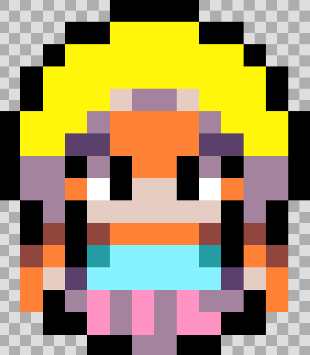
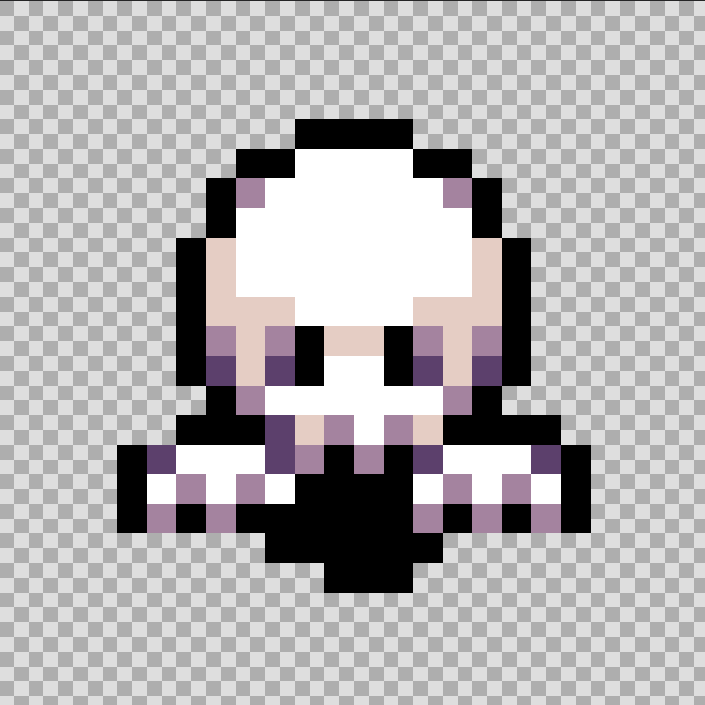
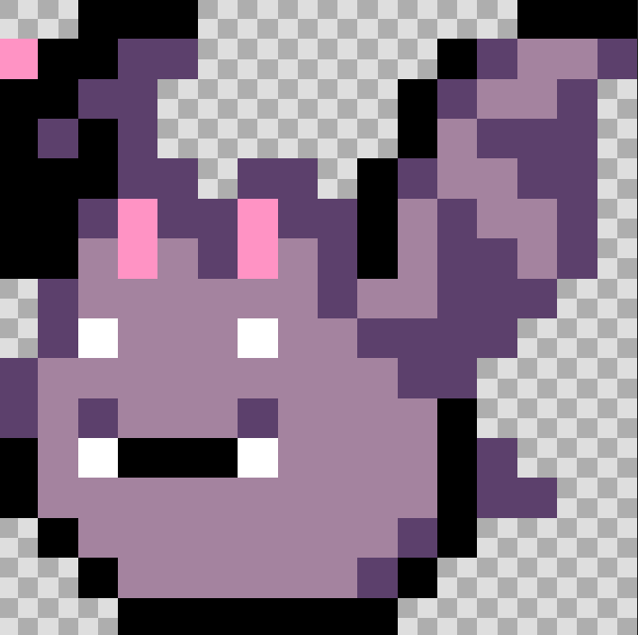
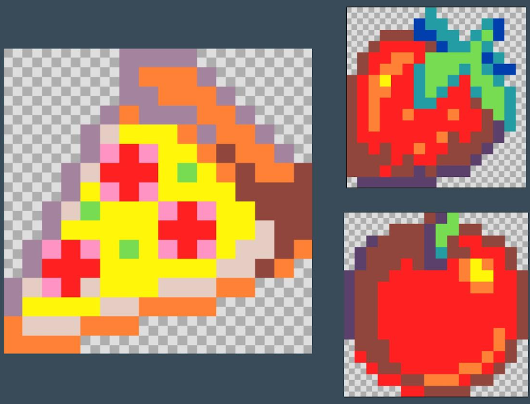
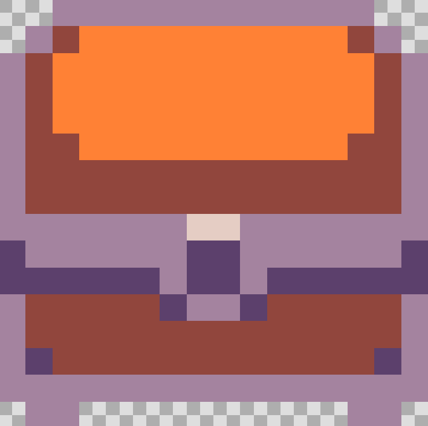
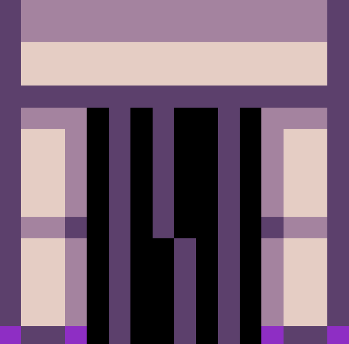
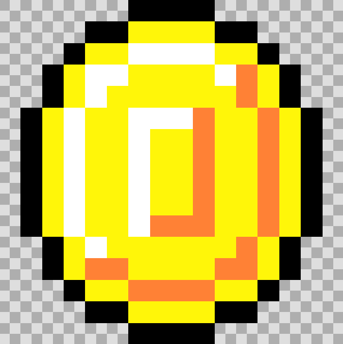
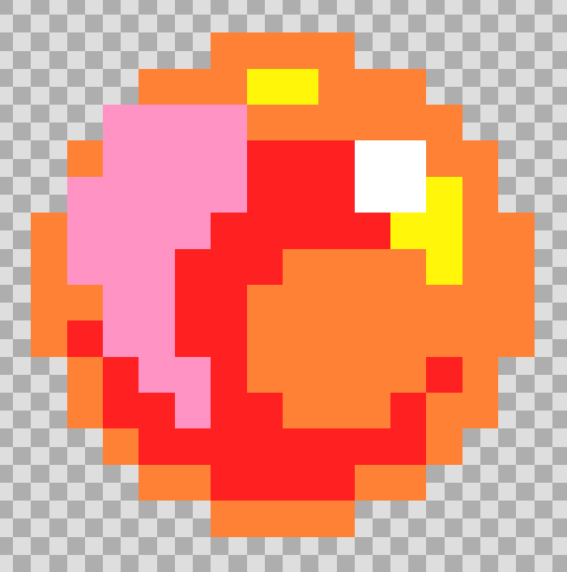

| Mota | Izena | Iruadia | Funtzioa / Deskribapena |
|---|---|---|---|
| Protagonista | NESKA |  |
Lau norabidetara mugitzen da eta "proiektilak" botatzen ditu (mamuak hiltzaeko), bera izango da harri bitxia hartuko duena herria sabaltzeko helburuarekin. |
| Etsaia | Mamua |  |
Lehen mailan agertzen diren etsaiak dira, nahiz eta erritmo motel batean mugitu arriskutsuak dira, zuk hiru bizitzak galtzeaz arduratuko dira. Bizitza-barra dute. |
| Etsaia | Mamu Beltza |  |
Bigarren mailan agertzen diren etsaiak dira, beste mamuekin konparatuta azkarragoak dira eta bizitza-barra dute. |
| Janaria | Sagarra/Pizza/Marrubia |  |
NESKA-k bat hartzen duenean, bizitza-kontagailuak gora egiten du. |
| Altxorra | Kofrea |  |
Harri bitxia bere barnekalean dago izkuturik. |
| Checkpoints | Teila | Zure kokapena gorde egingo du. | |
| Atea | Atea |  |
Hurrengo nibelera joatea ahalbidetzen dizu. |
| Txanpona | Urrezko txanpona |  |
Puntuak lortzen dira ikutzen badituzu. |
| Altxorra | HARRIBITXIA |  |
Azken objektua da. Hau lortzean jokoa irabazten duzu. |